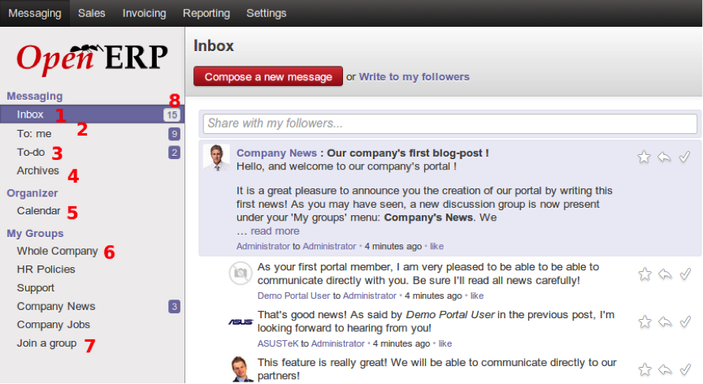

Messaging¶
Messaging adalah fitur baru di Odoo 8, yang bertujuan untuk menyimpan semua komunikasi bisnis dalam sistem ERP, dibandingkan eksternal seperti dalam klien email yang terpisah. Fitur ini memingkinkan pengguna untuk melakukan diskusi baik dalam internal perusahaan maupun dengan pihak lain seperti pelanggan dan mitra. Pesan juga berfungsi sebagai daftar to do , yang harus dikerjakan atau di follow up, berdasarkan pada arus komunikasi, dan kelompok diskusi, mailing list fungsionalitas untuk tim.
Gambar berikut ini menampilkan sub menu dari fungsi Messaging.
- Keterangan :
- Inbox. Inbox ini akan menampilkan semua komunikasi yang belum dibaca oleh pengguna. Pesan yang sudah ditandai sebagai done dan to do tidak ditampilkan di sini. Kotak ini harus selalu di simpan dalam keadaan kosong, yang menandakan bahwa pengguna telah membaca Pesan dan menandainya dengan done atau to do. Kotak masuk kosong merupakan kondisi ideal di mana tidak ada komunikasi bisnis yang tidak disadari oleh pengguna.
- To : Me. Semua pesan yang ditujukan langsung kepada pengguna akan muncul disini. Pesan di sini harus juga idealnya dibaca dan ditandai done atau to do, dan dibersihkan dari pandangan.
- To-Do. Semua pesan dari Inbox yang sudah ditandai dengan to do akan ditampilkan disini, sebagai daftar pekerjaan yang harus dilakukan oleh pengguna. Apabila daftar pekerjaan tersebut telah dilakukan, maka pengguna harus menandainya dengan done.
- Archives. Semua pesan yang sudah ditandai dengan done, akan disimpan sebagai arsip yang memungkinkan untuk penelusuran komunikasi bisnis sebelumnya.
- Calendar. Calendar ini akan menampilkan jadwal meeting baik untuk pengguna maupun untuk rekan kerja internal.
- Groups. Groups ialah kumpulan pesan secara kolaboratif. Apabila pengguna bergabung dalam kelompok, maka semua komunikasi untuk kelompok tersebut akan terlihat dan pengguna juga dapat mengirimkan pesan terhadap kelompok untuk dilihat oleh anggota kelompok lain. Fitur ini digunakan untuk melakukan diskusi atau memberikan pengumuman secara langsung kepada karyawan.
- Join Group. Tempat untuk bergabung dengan group dalam perusahaan atau membuat group baru, jika mempunyai hak akses. Setiap kali join di sebuah Group, maka akan muncul menu baru dibawah Groups.
- Unread Message. Merupakan jumlah pesan yang belum dibaca oleh pengguna.